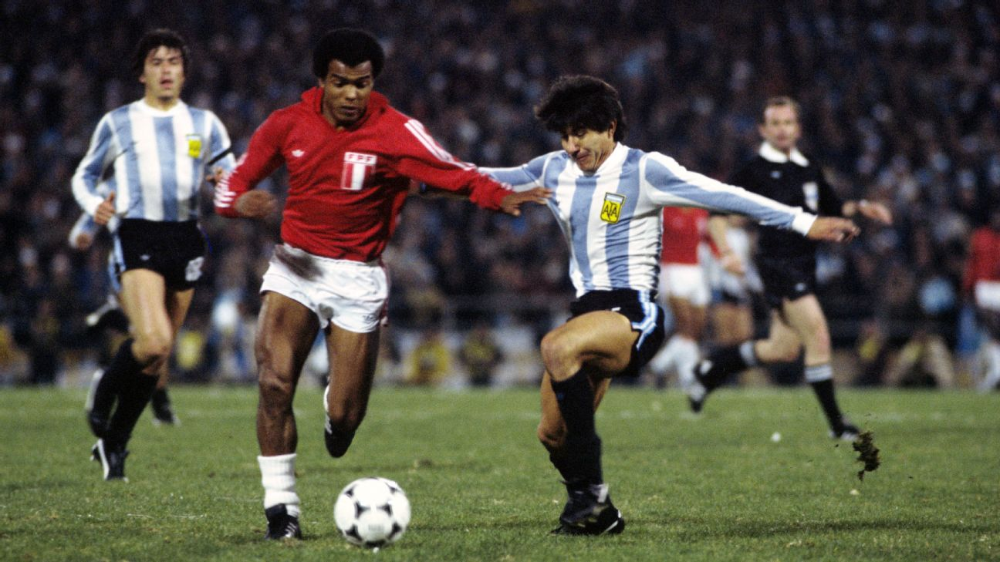

11.ª edición
Sede: Argentina
Copa Mundial de la FIFA Argentina 1978
1 – 25 de junio de 1978
País sede: Argentina 🇦🇷
16 selecciones
38 partidos
Datos generales del torneo
- País sede: Argentina 🇦🇷
- Ciudades sede: Buenos Aires, Rosario, Mendoza, Córdoba, Mar del Plata
- Estadios: 6 recintos (incluyendo el Estadio Monumental)
- Selecciones participantes: 16
- Partidos jugados: 38
- Goles anotados: 102
- Campeón: Argentina 🇦🇷
- Subcampeón: Países Bajos 🇳🇱
- Tercer lugar: Brasil 🇧🇷
- Cuarto lugar: Italia 🇮🇹
- Máximo goleador (Bota de Oro): Mario Kempes (6 goles)
- Mejor jugador: Mario Kempes 🇦🇷
- Mejor portero: Jan Jongbloed 🇳🇱
- Premio Fair Play: Argentina 🇦🇷
Jugadas y momentos destacados
Argentina 1978 fue un torneo vibrante, marcado por la figura de Mario Kempes, la fortaleza táctica de
Países Bajos y la intensa final disputada en Buenos Aires.

Resumen del torneo
-
La Copa Mundial regresó a Sudamérica por primera vez desde 1962.
-
Argentina, dirigida por César Luis Menotti, mostró un equipo ofensivo, intenso
y con un Kempes en estado de gracia.
-
El formato incluyó dos fases de grupos antes de la final, lo que generó encuentros decisivos muy
disputados entre Argentina, Brasil, Italia y Países Bajos.
-
El partido Argentina–Perú (6–0) sigue siendo uno de los encuentros más polémicos en la
historia del torneo.
-
Países Bajos, sin Cruyff, igualmente llegó a la final con un fútbol de posesión y presión alta.
-
En la final, Argentina venció 3–1 en tiempo extra con dos goles de Kempes y uno de Bertoni.
Fase final (últimos 4)
Grupo de semifinales (segunda fase)
- 🇦🇷 Argentina 6–0 Perú 🇵🇪
- 🇧🇷 Brasil 3–1 Polonia 🇵🇱
- 🇳🇱 Países Bajos 2–1 Italia 🇮🇹
Final
- 🇦🇷 Argentina 3–1 🇳🇱 Países Bajos
Argentina campeona del mundo
Tercer lugar
Selecciones participantes por grupo
Grupo 1
- 🇮🇹 Italia
- 🇦🇷 Argentina
- 🇫🇷 Francia
- 🇭🇺 Hungría
Grupo 2
- 🇩🇪 Alemania Federal
- 🇵🇱 Polonia
- 🇹🇷 Túnez
- 🇲🇽 México
Grupo 3
- 🇦🇹 Austria
- 🇧🇷 Brasil
- 🇪🇸 España
- 🇸🇨 Suecia
Grupo 4
- 🇳🇱 Países Bajos
- 🇵🇪 Perú
- 🇮🇷 Irán
- 🇨🇿 Escocia
Final: Argentina vs Países Bajos
La final se jugó el 25 de junio de 1978 en el Estadio Monumental de Buenos Aires.
Argentina derrotó 3–1 a Países Bajos en tiempo extra, conquistando su primer título mundial.
Argentina 🇦🇷 – Alineación titular
- DT: César Luis Menotti
- Ubaldo Fillol (POR)
- Jorge Olguín
- Daniel Passarella (C)
- Alberto Tarantini
- Americo Gallego
- Osvaldo Ardiles
- Mario Kempes
- René Houseman
- Daniel Bertoni
- Leopoldo Luque
Países Bajos 🇳🇱 – Alineación titular
- DT: Ernst Happel
- Jan Jongbloed (POR)
- Ruud Krol (C)
- Ernie Brandts
- Wim Jansen
- Arie Haan
- Willem van Hanegem
- Johnny Rep
- René van de Kerkhof
- Willy van de Kerkhof
- Rob Rensenbrink
Reseña general
Argentina 1978 fue un torneo cargado de emociones, polémicas y fútbol ofensivo.
La selección anfitriona logró su primer campeonato del mundo con un equipo dinámico
y la figura indiscutida de Mario Kempes.
La edición también dejó partidos inolvidables, como Argentina–Brasil,
Países Bajos–Italia y la dramática final en Buenos Aires ante más de 70 000 espectadores.